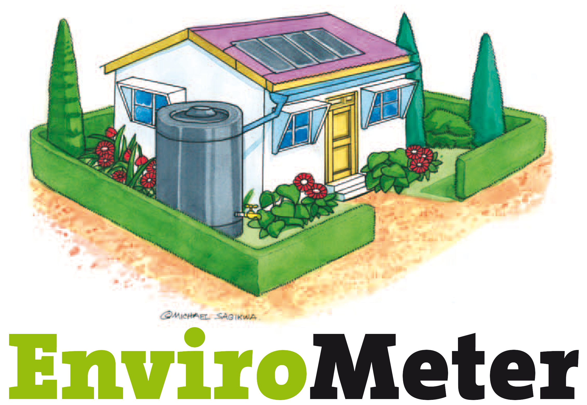

Let me begin this installment by saying how thankful I am to you, the readers of this series, not only my long-time supporters but also those who have recently discovered it. I hope you have a wonderful Thanksgiving break and can take the opportunity to reflect on what you all have to be thankful for. I am particularly grateful to those who’ve contributed to the effort with time and money. It keeps me going.
Ironically, I am also thankful for COVID, as the unscheduled break prompted me to rearrange my personal life for the better and reflect on what matters to me. It’s been a learning and growing experience, for sure. And it led me to write this series for you.
This series aims to offer a unique perspective that might be too uncomfortable for others to cover. Many other scientists of my heritage are in well-established senior roles that enable them to wield influence. At the same time, such influential positions bind them to an establishment I’m not obligated to support. I am blessed with a philosophical mindset and a classical academic pedigree. But, I’m only accountable to a scientific ethos at the moment—Academic or professional achievements no longer sustain my ego. I also have a well-established entrepreneurial spirit, somewhat diminished by age, so I’m attracted by profitable approaches but have a weakening compulsion to commercialize. Further, at my age, I am not inclined to squirrel away any potentially unique ideas that cannot be monetized quickly, allowing me to share here without regret.
Forward.
This blind spot is one that I shared with pretty much the entire “cleantech” community before starting this series. So here’s the conclusion, in a nutshell:
The view that biofuels and renewable electricity are good for the environment is based on Marketing, not Science.
“Wait. What??”
Let me explain.
Both biofuel and renewable electricity are considered “green”, and consumers are told that “going green” is good for the planet. The subliminal premise is that if every living human could be convinced to go “green”, our environmental problems would vanish. Further, like other brands, consumers who use “green” products tend to feel that they are members of a superior tribe—just like those of us who follow specific sports teams [Go Bills!] or attended certain schools [yeah, Harvard.] It’s human nature. But, in the cause of science, it’s essential to define “green” precisely.
In context, a “green” label distinguishes “environmentally beneficial” goods from “environmentally detrimental” ones. Consumers believe that if they use something labeled “green”, they’re doing something positive for the environment. But what would Science say about “green”? First, we’d need to agree on an objective measure of environmental benefits. Since we have only one “environment”, we can’t do experiments to choose better approaches.
For the moment, imagine an ‘envirometer’, a fictitious instrument that precisely and quantitatively measures the environment’s health. Doing something “green” causes the reading on the envirometer to rise, and the more it increases, the “greener” the activity. If it doesn’t increase, it’s not beneficial, hence not “green”. Perhaps we can rely on the color wheel to describe actions that cause the reading to fall, making such activities “red” and “redder”.
It’s not a new word:

The drawing illustrates the ideal green home, with solar panels on the roof, awnings to reduce heating/cooling loads, a cistern for storing rain, and lots of green plants in the yard. But this EnviroMeter doesn’t measure anything, despite the etymology. Instead, it’s a checklist of yes-or-no statements like “We have reduced air travel. If it’s necessary to fly, we pay voluntary ‘carbon tax’ on air travel or support local communities through activities like forestation.” It reads like a list of Affirmations in the Church of Environmentalism. [I’ve addressed the cognitive dissonance of paying for offsets , the false benefits of choosing ground transportation , and the lack of usefulness of forestation in previous installments.] But the graphic illustrates a fundamental problem preventing the creation of a true envirometer—Quantifying tradeoffs. For example, should you collect rainwater or install solar panels if your funds are limited (and they always are)? Without the ability to objectively measure the relative environmental benefits of a choice, the answer is inevitably a matter of preference (subject to marketing), not science (subject to objective data).
It turns out that, in the case of biofuels, we already have most of an envirometer. It’s the CO2 level in the air. And we measure it globally and frequently. So, to be labeled “green”, the amount of CO2 in the atmosphere should decrease when biofuels are used. But that’s not what happens. When any carbon-based fuel is burned, whether it comes from geological or biological carbon, CO2 is released into the atmosphere. It’s unavoidable. So biofuels aren’t scientifically green, despite the marketing label.
Now, you’re probably saying, “Whoa. Wait a minute. Do you mean to tell me that biofuels aren’t better for the environment than geologic carbon-based fuels?” Well, sure, they are, but they’re still not “green”, at least not in a scientific sense. Perhaps “less red” would be a better descriptor. Even if carbon were captured after combustion, carbon neutrality is the best biofuels could ever achieve.
My point is that to be truly “green”, actions must decrease the envirometer. If the main environmental impact is on the atmosphere, then any activity must remove CO2. Biofuels don’t, but other biological activities like BiCRS or carbon farming might. The comparator is important: biofuels are less red than geologic sources but redder than not burning their carbon at all. Here’s the crux of the problem—Every living thing on the planet needs a source of energy to live, and the vast majority breathe in oxygen and breathe out CO2. In other words, biofuels power you and me, too! But it’s not scientifically valid to label the CO2 we breathe out differently than what is released when geologic carbon is burned. It’s the same molecule with the same impact on the environment. Scientifically, there’s no difference.
In a nutshell:
“Green” is branding that distinguishes two goods based on environmental benefits perceived by consumers.
Let me reiterate: Environmentalism is not a science . Perhaps it’s a religion. Maybe it’s tribal or a lifestyle choice—I’m not casting aspersions on it, and I believe in many of its tenets. But because it’s not a science, there are no absolute truths yet to be discovered, and it is counterproductive to expect 100% adherence. Moreover, trying to achieve that feat geopolitically inevitably leads to unresolvable conflicts.
OK, so what about “renewable electricity”? Certainly, that can be called “green”, right?
Like biofuels, renewable electricity can be branded “green”, but let’s look at the science. As a practical matter, electric power (at the scale we use it) cannot be stored or transmitted over long distances. This means that it must be generated on demand, using whatever resources are available. If the sun is shining or the wind is blowing, renewable electricity on the grid can be substituted for electricity derived from geologic carbon. But an electron is an electron is an electron; you can’t pick and choose just the green ones. Like biofuels, the best outcome is environmental neutrality, even at 100%. [An exception: An off-grid, solar-powered machine that sucks CO2 out of the air would be “green”.]
I hope this perspective has made you think again about how we, as humans, can continue living comfortably on Earth. Strip away the marketing patina of “green” and look for a more precise scientific definition. Clearly, relying solely on reduced emissions is a fool’s errand. And the best way to go truly “green” is to increase the actual greening of Earth, using a biologically-driven, evolutionarily-optimized process called “photosynthesis”.
Happy Thanksgiving week! I’m taking next week for family, so I will skip next Sunday and return to this in two weeks.
Thank you for reading Healing the Earth with Technology. This post is public so feel free to share it.